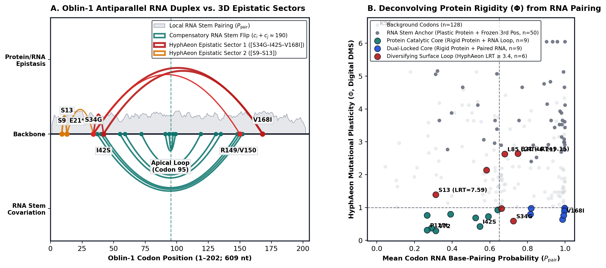
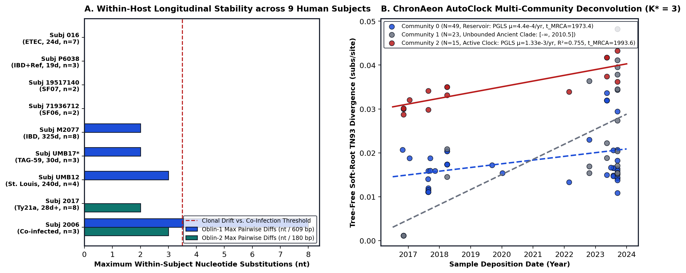
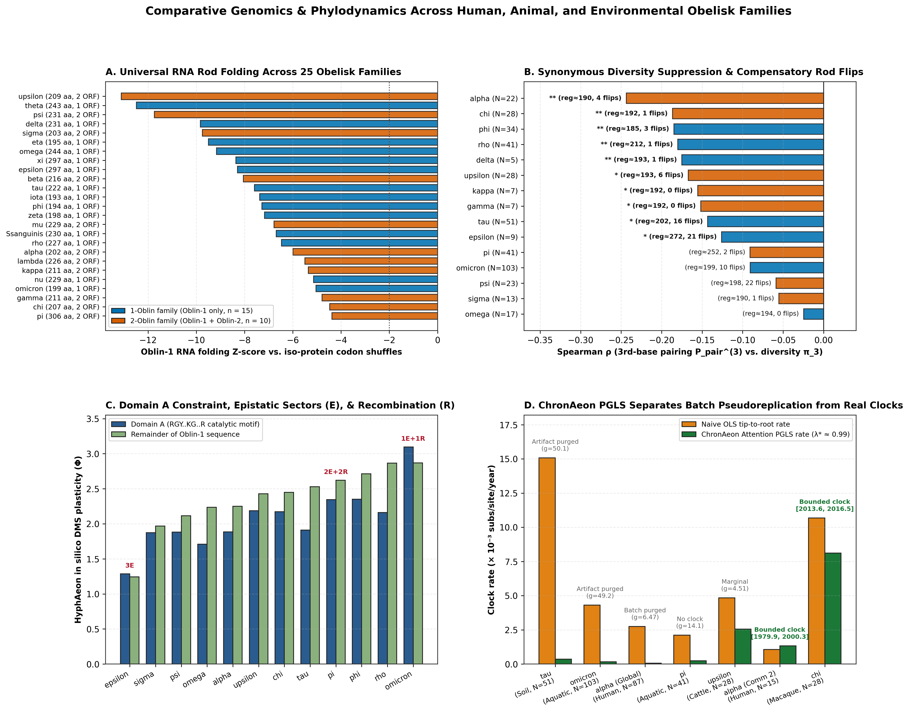

Standard codon evolution models break on obelisks because their circular RNA genomes fold into a tight base-paired rod while simultaneously encoding proteins. That dual constraint freezes third-codon positions and manufactures false selection signals.
Pairing thermodynamic RNA folding with HyphAeon, RhizAeon, and ChronAeon across 87 human Obelisk-$\alpha$ assemblies and all 25 reference obelisk families (Obelisk-alpha through Obelisk-omega, plus oral Streptococcus sanguinis) proves that antiparallel RNA rod locking is universal across one-oblin and two-oblin lineages. The combined pipeline isolates 3D epistatic protein sectors and aquatic recombination while separating study-batch pseudoreplication from active host-associated molecular clocks.
All 25 reference families lock $64.3\%\text{–}76.3\%$ of their circular genomes into stems ($Z = -4.38\text{ to }-13.11$ vs. iso-protein shuffles), with 89 double-compensatory flips preserving family-specific registers.
HyphAeon isolates co-selected interior sectors in Obelisk-alpha (S34G–I42S–V168I, $p = 0.0007$), epsilon ($p = 0.0052$), pi ($p = 0.010$), and omicron ($p = 0.020$), alongside rigid Domain A cores.
Obelisk-$\alpha$ persists clonally inside individual humans for up to 325 days ($0\text{–}3\text{ nt}$), whereas aquatic Obelisk-pi and Obelisk-omicron undergo frequent homologous crossovers in RhizAeon.
ChronAeon Attention PGLS purges batch pseudoreplication in UK human and soil cohorts ($g = 6.47\text{–}50.1$). It also isolates bounded clocks in human Community 2 ($1.33 \times 10^{-3}\text{/yr}$) and macaque Obelisk-chi ($8.11 \times 10^{-3}\text{/yr}$).
Viroids broke a textbook rule of biology in 1971 when Theodor Diener showed that naked rings of RNA could infect plants without a protein shell or a single protein-coding gene. Obelisks—discovered in 2024 inside human gut and oral bacteria (Zheludev et al., 2024)—break the opposite rule. They are circular, non-encapsidated RNA replicons of roughly 1,100 nucleotides that fold into an end-to-end rod-like RNA duplex, yet dedicate 70% to 80% of their circle to encoding proteins called oblins.
Most obelisk families encode only a single conserved ~200-amino-acid protein, Oblin-1. A prominent human gut lineage called Obelisk-$\alpha$ carries a second gene, Oblin-2, which encodes a 60-amino-acid $\alpha$-helical leucine zipper. When we examined 87 paired human metatranscriptomic assemblies of Obelisk-$\alpha$, a foundational question came into focus. How do you measure natural selection, genetic exchange, and evolutionary time when every nucleotide is simultaneously constrained by a 3D protein and a base-paired RNA rod?
Classical selection tests compare amino-acid-changing (nonsynonymous) mutations against silent (synonymous) third-position mutations, assuming that third codon positions evolve as a neutral clock. Inside a viroid-like RNA rod, that assumption fails. Thermodynamic partition-function folding of Oblin-1 (609 nt) in ViennaRNA reveals a minimum free energy of $-188.90\text{ kcal/mol}$—nearly $18.5\text{ kcal/mol}$ more stable than codon-shuffled sequences encoding the exact same protein ($Z = -1.84$). Nearly three-quarters of Oblin-1 ($73.6\%$, $448/609\text{ nt}$) is locked in base-paired stems. Furthermore, third codon positions carry the highest pairing probability of all three positions ($P_{\mathrm{pair}}^{(3)} = 0.741$), which directly suppresses synonymous polymorphism ($\rho = -0.230, p = 0.0010$).
When mutations do occur in the Oblin-1 duplex across the 87 human strains, 55.0% ($33/60$) of variable base pairs preserve RNA stem geometry through guanine-uracil wobble transitions ($25$) or double Watson-Crick flips ($8$) where both paired bases mutate together. Plotting those 8 double-compensatory flips along the gene reveals a clean geometric register (Fig. 1A, lower teal arcs). Every pair satisfies $\mathrm{Codon}_i + \mathrm{Codon}_j \approx 190$ (`37↔152`, `40↔150`, `42↔148`, `55↔135`, `59↔131`, `72↔119`, `91↔99`, `94↔97`) around an apical hairpin turn at codon 95.

HyphAeon co-selection sectors: Sector 1 ([S34G–I42S–V168I], $p_{\mathrm{perm}} = 0.0007$) and Sector 2 ([S9–S13], $p_{\mathrm{perm}} = 0.0176$).
Panel B combines HyphAeon digital deep mutational scanning plasticity ($\Phi$) with RNA pairing probability ($P_{\mathrm{pair}}$) to separate dual-locked core residues ($n=9$), catalytic loop residues ($n=9$), frozen RNA stem anchors ($n=50$), and diversifying surface loops ($n=6$).
How do we separate RNA stem locking from protein evolution and host epidemiology? Running HyphAeon, RhizAeon, and ChronAeon across the 87 assemblies—combined with forensic recovery of all 86 Sequence Read Archive (SRA) and European Nucleotide Archive (ENA) BioSample records—yields four concrete biological findings.
- An epistatic bridge between 3D protein hubs, RNA stems, and
Oblin-2. In under two seconds,HyphAeondigital deep mutational scanning (`hyphaeon dms`, 4,959 single-amino-acid mutants) and branch co-selection (`hyphaeon epistasis`) isolate a rigid three-residue interior sector inOblin-1—S34G,I42S, andV168I($C(S) = 0.942, p_{\mathrm{perm}} = 0.0007$, 23–27 shared branches, $q \le 8.9 \times 10^{-29}$). When we map the primary clade split ofOblin-2onto theOblin-1tree viahyphaeon phenotype, that exact triad (`S34G`, `I42S`, `V168I`) emerges as the top directional signature differentiating the two obelisk sublineages ($q = 2.4 \times 10^{-14}$), accompanied by synonymous flips atR149R($q = 2.3 \times 10^{-4}$) andV150V($q = 3.0 \times 10^{-5}$). Why do synonymous changes at codons 149–150 co-mutate with amino acid changes at codons 34, 42, and 168? Codons 40–42 base-pair directly across the RNA rod with codons 148–150. MutatingI42Ssimultaneously remodels the protein core and forces a compensatory synonymous flip on the opposite strand of the RNA duplex. - Months-long clonal persistence inside single human hosts.
Linking the 86 SRA runs by human participant ID uncovered 9 individuals sampled across multiple longitudinal visits (Fig. 2A). First, the unlabeled
Referencegenome is 100% identical across both genes toSRR5950395_primary, collected on December 1, 2015 from inflammatory bowel disease patientP6038in the Human Microbiome Project 2 cohort (PRJNA398089). Second, all three assemblies with a prematureTAGstop codon at position 59 ofOblin-2(SRR24541421,SRR24541275,SRR24541274) come from consecutive monthly stool samples of a single person in St. Louis (SubjectUMB17,PRJNA400628). Across 8 of the 9 longitudinal subjects—including Subject016(7 visits over 24 days, 0 substitutions) and SubjectM2077(8 visits over 325 days, 0–2 substitutions inOblin-1and 0 inOblin-2)—a single clonal obelisk lineage persists stably inside its human host. - Co-infection chimeras and inter-gene clade jumping.
One participant in the University of Maryland typhoid vaccine cohort (Subject
2006,PRJNA407499) carried two divergent Obelisk-$\alpha$ strains across visits (8 nt difference inOblin-1, 3 nt inOblin-2). Co-infection explains why pairwise distances betweenOblin-1andOblin-2correlate at only $r = 0.496$ and why 8 of the 87 assemblies switch primary spectral clades between the two genes (`hyphaeon splits`). Disabling SNP compression inRhizAeon(`--no-compress-snps`) isolates 3 mosaic tracts insideOblin-1($p_{\mathrm{Fisher}} = 3.8 \times 10^{-6}\text{ to }2.6 \times 10^{-5}$), including clade-jumperERR11507765_primaryand donor lineageSRR21886050_primary. - Separating ancient commensal divergence from modern sublineage clocks.
Naive root-to-tip regression (`OLS`) on all 87 deposition dates produces a spurious crown date of 1984.4 $[1952.7, 1996.0]$ because 24 United Kingdom
INTEGRATEassemblies (`PRJEB62473`) were released on a single day in June 2023. Downweighting shared clade history viaHyphAeonAttention PGLS insideChronAeon($\lambda^* = 0.974\text{--}0.999$) restores an unbounded Fieller confidence interval ($[-\infty, 2005.7]$, $g = 6.47 > 1$), proving that global Obelisk-$\alpha$ diversity predates modern sampling. Within that ancient backbone,ChronAeon AutoClock($K^* = 3$ communities, 23.6× eigengap cliff; Fig. 2B) isolates an actively diverging 15-strain sublineage (Community 2) evolving at $\mu = 1.33 \times 10^{-3}\text{ subs/site/yr}$ ($R^2_{\mathrm{gls}} = 0.755, t_{\mathrm{MRCA}} = 1993.6\text{ }[1979.9, 2000.3]$). That substitution rate matches the within-host drift rate of $\sim 1.9 \times 10^{-3}\text{ subs/site/yr}$ observed over 325 days in SubjectM2077.

ChronAeon AutoClock spectral decomposition ($K^* = 3$, eigengap cliff $= 23.6\times$) separates deep commensal reservoirs (Communities 0 and 1) from an actively evolving 15-strain sublineage (Community 2, PGLS $\mu = 1.33 \times 10^{-3}\text{ subs/site/yr}, R^2 = 0.755$).
Beyond Obelisk-α: Comparative Architecture and Evolution Across All 25 Reference Families
Does the antiparallel RNA rod register and dual protein-RNA lock discovered in Obelisk-$\alpha$ hold across the wider obelisk radiation? We extended our ViennaRNA, HyphAeon, RhizAeon, and ChronAeon pipeline across all 25 reference obelisk families established by Zheludev and colleagues (Obelisk_000001 through Obelisk_000025, spanning Obelisk-alpha through Obelisk-omega and the Streptococcus sanguinis human oral prototype Obelisk-S.s). Fifteen of these 25 families encode only a single conserved gene, Oblin-1 (193 to 297 amino acids). Ten families encode both Oblin-1 and an accessory Oblin-2 protein (alpha, beta, gamma, kappa, lambda, mu, pi, sigma, upsilon, and chi).
Thermodynamic folding of the 25 family centroids confirms that end-to-end RNA duplex architecture is a universal invariant of the obelisk supergroup (Fig. 3A). Full circular genomes (733 nucleotides in Obelisk-iota to 1,434 nucleotides in Obelisk-omega) fold with minimum free energies of $-255.1$ to $-457.3\text{ kcal/mol}$, locking $64.3\%$ to $76.3\%$ of all genomic nucleotides into base-paired stems. Across all 25 families, the Oblin-1 coding region is far more stable than codon-shuffled controls that preserve the exact amino acid sequence ($Z = -4.38$ in Obelisk-pi to $Z = -13.11$ in cattle-associated Obelisk-upsilon, with a median $Z = -7.28$). One-oblin families ($n = 15$, mean $Z = -7.83$, mean paired fraction $= 67.6\%$) and two-oblin families ($n = 10$, mean $Z = -7.39$, mean paired fraction $= 68.1\%$) exhibit indistinguishable RNA rod stability in Oblin-1. In compact one-oblin families such as Obelisk-delta (785 nt, 231 codons, $Z = -9.83$) and Obelisk-tau (799 nt, 222 codons, $Z = -7.59$), the single Oblin-1 open reading frame spans $83\%$ to $88\%$ of the circular chromosome and forms the entire self-complementary rod without requiring a second open reading frame. Even the human oral Streptococcus sanguinis prototype (1,137 nt, encoding a single 230-codon Oblin-1 on the sense strand) locks $72.3\%$ of its circular genome into a $-381.4\text{ kcal/mol}$ rod ($Z = -6.69$, $P_{\mathrm{pair}}^{(3)} = 0.693$) centered on an antiparallel codon register of $\mathrm{Codon}_i + \mathrm{Codon}_j \approx 205$ ($\mathrm{IQR} = 2.0\text{ codons}$).

HyphAeon deep mutational scanning plasticity ($\Phi$) contrasting the conserved C-terminal Domain A (RGY..KG..R) against the rest of Oblin-1, alongside significant epistatic sectors and RhizAeon recombination in aquatic families.
Panel D compares naive OLS versus ChronAeon Attention PGLS substitution rates across 332 ENA/SRA runs, eliminating ecological batch pseudoreplication in soil Obelisk-tau ($g=50.1$) while confirming bounded PGLS clocks in mammalian gut lineages.
Extracting exact-length in-frame Oblin-1 coding alignments across all 15 multi-sequence families ($N = 5$ to $103$ unique assemblies, 429 unique coding sequences in total) reveals four comparative evolutionary rules.
- Universal third-position synonymous suppression and family-specific antiparallel registers.
Across all 15 multi-sequence families, third-position nucleotide diversity ($\pi_3$) correlates negatively with RNA base-pairing probability ($P_{\mathrm{pair}}^{(3)}$), reaching $p < 0.05$ in 10 of 15 families. The strongest synonymous suppression occurs in
Obelisk-alpha($\rho = -0.244, p = 0.00048$), macaqueObelisk-chi($\rho = -0.187, p = 0.0071$), macaqueObelisk-phi($\rho = -0.185, p = 0.0099$), macaqueObelisk-rho($\rho = -0.180, p = 0.0065$), humanObelisk-delta($\rho = -0.175, p = 0.0077$), and cattleObelisk-upsilon($\rho = -0.167, p = 0.016$). Across the 15 alignments, 89 double-compensatory Watson-Crick base-pair flips obey family-specific folding registers: $\mathrm{Codon}_i + \mathrm{Codon}_j \approx 185$ inObelisk-phi, $\approx 192$ inObelisk-upsilon, $\approx 199$ inObelisk-omicron, and $\approx 200$ inObelisk-tauandObelisk-psi. Longer oblins shift their register outward to $\approx 251$ in 244-codonObelisk-piand $\approx 274$ in 297-codonObelisk-epsilon. - Domain A (
RGY..KG..R) rigidity across one-oblin and two-oblin families. In 10 of the 12 families evaluated byhyphaeon dms, the conserved C-terminal Domain A signature ([RK]..GY[KDRN][DH]G[ST]..R) exhibits lower mutational plasticity ($\Phi$) than the remainder of the protein. That pattern shows that Domain A acts as the conserved catalytic or RNA-binding anchor across both one-oblin and two-oblin lineages. Even inObelisk-sigmaandObelisk-upsilon, where the canonical glycine-tyrosine loop is remodeled into a twin-cysteine motif (GYCCGYat codon 150 andGYCRGYat codon 153), Domain A remains tightly constrained ($\Phi = 1.87$ vs. $1.97$ insigmaand $\Phi = 2.19$ vs. $2.43$ inupsilon). - 3D epistatic sectors and homologous recombination in aquatic biofilms.
Running
hyphaeon epistasisdiscovers statistically significant co-evolving amino acid sectors ($p_{\mathrm{perm}} < 0.05$) in three additional families. Human 297-codonObelisk-epsiloncontains 3 sectors led by[S11–S68–T170–L217–E220]($C(S) = 0.907, p = 0.0052$). Aquatic two-oblinObelisk-picontains 2 sectors led by[M15–V17–V34–L40–V55–K71–I106]($C(S) = 0.835, p = 0.0100$), and aquatic one-oblinObelisk-omicroncontains[K4–P56–G86–I98–Q121–K182]($C(S) = 0.873, p = 0.0201$). Whereas mammalian gut obelisks (rho,sigma,upsilon,phi,chi, andomega) show zero recombination events at strict default thresholds inRhizAeon, aquatic and wastewater obelisks undergo verified homologous exchange. InObelisk-omicron,RhizAeonidentifies a 15-SNP recombinant tract inSRR10932000(positions 84–172, Fisher $p = 1.71 \times 10^{-9}, Z = 8.08$). InObelisk-pi,RhizAeonuncovers two macroscopic crossovers (positions 429–732, 33 informative sites, $p = 2.78 \times 10^{-22}, Z = 2.41$, and positions 1–360, 38 informative sites, $p = 1.15 \times 10^{-20}, Z = 2.82$). - Cross-habitat phylodynamics separates soil batch artifacts from active mammalian clocks.
Retrieving ENA and SRA collection dates across all 332 non-$\alpha$ runs reveals a sharp contrast between environmental reservoirs and mammalian gut cohorts (Fig. 3D). In soil and peat
Obelisk-tau($N = 51$, 2010.7–2018.0), naive OLS regression produces a steep clock slope ($\mu_{\mathrm{OLS}} = 1.51 \times 10^{-2}\text{ subs/site/yr}, R^2 = 0.698, p = 2.5 \times 10^{-14}$). However,ChronAeonAttention PGLS ($\lambda^* = 0.999$) proves that this slope is an ecological batch artifact of sampling distinct soil clades in different years, collapsing the rate 41-fold ($\mu_{\mathrm{PGLS}} = 3.64 \times 10^{-4}, R^2_{\mathrm{gls}} = 0.011, g = 50.08$, unbounded $[-\infty, 1991.7]$). By contrast, cattle rumenObelisk-upsilon($N = 28$, 2014.2–2017.7) retains a PGLS rate of $2.56 \times 10^{-3}\text{ subs/site/yr}$ ($R^2_{\mathrm{gls}} = 0.428$). Rhesus macaqueObelisk-chi($N = 28$, 2016.5–2019.2) yields a bounded PGLS clock at $\mu_{\mathrm{PGLS}} = 8.11 \times 10^{-3}\text{ subs/site/yr}$ ($R^2_{\mathrm{gls}} = 0.525, g = 0.147$) with a crown ancestor in 2015.7 ($[2013.6, 2016.5]$).
| Obelisk Family | ORFs | Ecological Niche | CDS (N / L) | Rod Z & Register | ρ(Ppair(3), π3) | Flips | DMS Φ (Dom. A / Rest) | Epistatic Sectors & RhizAeon / ChronAeon |
|---|---|---|---|---|---|---|---|---|
Obelisk-α (Ob_000001) |
2 | Human gut (global) | 22 (87) / 202 | $Z = -5.99$, reg $\approx 190$ | $-0.244$ ($p = 0.00048$) | 4 (8) | $1.88 / 2.25$ | 2 sectors (S34-I42-V168, $p=0.0007$); Comm. 2 clock $1.33 \times 10^{-3}$ |
Obelisk-β (Ob_000002) |
2 | Human oral/gut (USA) | 2 (12) / 216 | $Z = -8.05$, reg $\approx 190$ | Low polymorphism | 0 | $P_{\mathrm{pair}}^{(3)} = 0.726$ | Clonal human cohort (PRJNA940499) |
Obelisk-S.s (Ob_000003) |
1 | Oral S. sanguinis | 2 / 230 | $Z = -6.69$, reg $\approx 205$ | 98.2% AA identity | 0 | $P_{\mathrm{pair}}^{(3)} = 0.693$ | SK36 monoculture & human saliva EVs (PRJNA917314) |
Obelisk-δ (Ob_000005) |
1 | Human gut & bioreactor | 5 / 231 | $Z = -9.83$, reg $\approx 193$ | $-0.175$ ($p = 0.0077$) | 1 | $P_{\mathrm{pair}}^{(3)} = 0.728$ | Compact 785 nt 1-oblin rod (2↔190 flip) |
Obelisk-ε (Ob_000006) |
1 | Human metagenome | 9 / 297 | $Z = -8.29$, reg $\approx 272$ | $-0.126$ ($p = 0.030$) | 21 | $1.29 / 1.24$ | 3 sectors (S11-S68-T170-L217-E220, $p=0.0052$) |
Obelisk-ο (Ob_000016) |
1 | Aquatic & wastewater | 103 / 199 | $Z = -5.04$, reg $\approx 199$ | $-0.091$ ($p = 0.20$) | 10 | $3.10 / 2.87$ | 1 sector ($p=0.020$); 1 recomb tract ($p=1.7 \times 10^{-9}, Z=8.08$) |
Obelisk-π (Ob_000017) |
2 | Aquatic & bioreactor | 41 / 244 | $Z = -4.38$, reg $\approx 252$ | $-0.091$ ($p = 0.16$) | 2 | $2.35 / 2.62$ | 2 sectors ($p=0.010$); 2 recomb crossovers ($p=2.8 \times 10^{-22}$) |
Obelisk-ρ (Ob_000018) |
1 | Macaca mulatta gut | 41 / 227 | $Z = -6.47$, reg $\approx 212$ | $-0.180$ ($p = 0.0065$) | 1 | $2.16 / 2.87$ | Single 2019 primate cohort (T206 $\Phi = 0.24$) |
Obelisk-σ (Ob_000019) |
2 | Macaca mulatta gut | 13 / 203 | $Z = -9.75$, reg $\approx 190$ | $-0.055$ ($p = 0.43$) | 1 | $1.87 / 1.97$ | Cysteine-remodeled Domain A (GYCCGY, H81 $\Phi = 0.24$) |
Obelisk-τ (Ob_000020) |
1 | Soil & peat (global) | 51 / 222 | $Z = -7.59$, reg $\approx 202$ | $-0.143$ ($p = 0.033$) | 16 | $1.91 / 2.53$ | 9 co-selection edges; PGLS purges OLS soil batch ($g = 50.1$) |
Obelisk-υ (Ob_000021) |
2 | Cattle rumen (Canada) | 28 / 209 | $Z = -13.11$, reg $\approx 193$ | $-0.167$ ($p = 0.016$) | 6 | $2.19 / 2.43$ | Extreme rod lock ($76.3\%$ paired); $\mu_{\mathrm{PGLS}} = 2.56 \times 10^{-3}$ |
Obelisk-φ (Ob_000022) |
1 | Macaca mulatta gut | 34 / 194 | $Z = -7.28$, reg $\approx 185$ | $-0.185$ ($p = 0.0099$) | 3 | $2.35 / 2.71$ | Conserved 1-oblin primate rod (51↔133, 74↔111 flips) |
Obelisk-χ (Ob_000023) |
2 | Macaca mulatta gut | 28 / 207 | $Z = -4.47$, reg $\approx 192$ | $-0.187$ ($p = 0.0071$) | 1 | $2.17 / 2.45$ | Bounded PGLS clock ($\mu = 8.11 \times 10^{-3}$, crown $2015.7$) |
Obelisk-ψ (Ob_000024) |
2 | Bioreactor & sludge | 23 / 231 | $Z = -11.74$, reg $\approx 198$ | $-0.059$ ($p = 0.37$) | 22 | $1.88 / 2.12$ | 22 compensatory rod flips (14↔186, 15↔185, 16↔184) |
Obelisk-ω (Ob_000025) |
1 | Macaca mulatta gut | 17 / 244 | $Z = -9.16$, reg $\approx 194$ | $-0.025$ ($p = 0.70$) | 0 | $1.71 / 2.24$ | Largest 1,434 nt circle (V152 $\Phi = 0.38$, V150 $\Phi = 0.43$) |